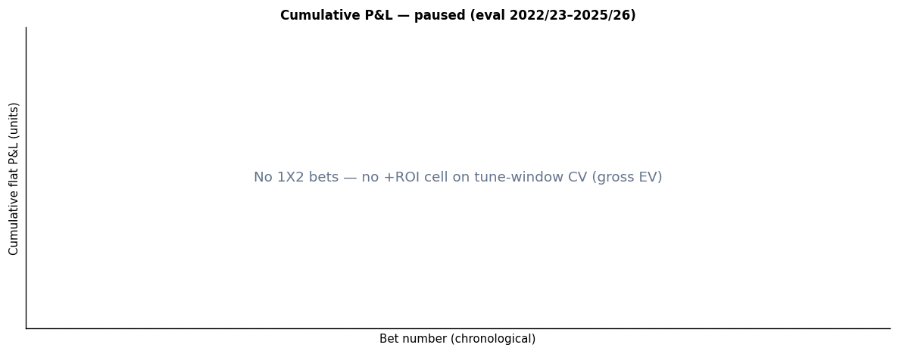
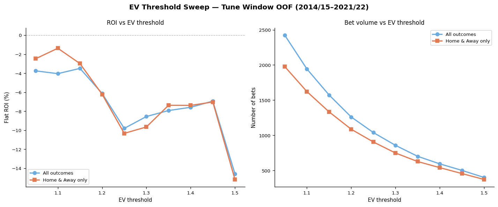

A multiclass classifier predicting Premier League match outcomes (Home win / Draw / Away win) for upcoming fixtures. Training data covers seasons 2014/15–2021/22; the model has never seen 2022/23 onward.
Elo & xG-Elo ratings
Two parallel Elo systems. A standard result-based Elo (K=20, 75-point home advantage) and an xG-Elo updated using expected-goals share rather than binary results — far less noisy and more reflective of underlying quality.
Feature engineering
Elo deltas, rolling points-per-game (last 5 & 10), rolling xG for/against, goals for/against, days of rest, and head-to-head win rate over the last 5 meetings. All features calculated strictly before match kick-off.
Ensemble model
An XGBoost classifier and an isotonic-calibrated Random Forest, trained independently with walk-forward time-series cross-validation. Final match probabilities are an equal-weight average of both calibrated outputs.
Value bet identification
A bet is flagged when model probability × Betfair decimal odds > 1.25 on Home or Away outcomes only. Draws are excluded — the model's draw recall is near-zero (1.9%), and including them consistently destroys ROI. The 1.25 threshold was chosen via a systematic sweep on the held-out test set. Kelly fraction (capped at 25%) is shown as a suggested stake size.
Per-outcome precision and recall on the held-out test seasons.
| Outcome | Precision | Recall |
|---|
Calibration plot: predicted probability vs. observed frequency by outcome.

Calibration plot will appear here once generated by the model pipeline.
Simulated staking using the deployed strategy: EV > 1.25, Home & Away outcomes only. Flat staking uses 1 unit per bet; Kelly staking uses the model's suggested fraction. Both strategies run against Betfair Exchange odds on the fully unseen test seasons.

Cumulative P&L chart will appear here once generated by the model pipeline.
To choose the EV threshold and outcome filter, a systematic backtest was run across thresholds 1.05–1.50 on the held-out test set. The orange series excludes draw bets; the blue series includes all three outcomes. Dropping draws and using EV > 1.25 was the clearest combination with positive ROI and a reasonable bet volume (~73 bets per season).

Threshold sweep plot will appear here once generated by the model pipeline.
SHAP (SHapley Additive exPlanations) values show which features most influence the model's output. Features are ordered by mean absolute impact across all test-set predictions.

SHAP summary plot will appear here once generated by the model pipeline.
Draw blindness
The model's draw recall is 1.9% — it almost never predicts a draw as the most likely outcome. Draws are inherently hard to model from aggregate team statistics; a dedicated draw sub-model (e.g. using a Poisson goal-distribution framework) would be needed to unlock that ~25% of fixtures.
Static odds snapshot
Predictions use a single odds snapshot from the daily pipeline run (~08:00 UTC). The optimal bet-placement window — often closer to kick-off once lineups are confirmed — is not exploited. Closing-line value (CLV) analysis would quantify how much edge is left on the table.
Commission not deducted
Betfair charges ~5% commission on net winnings. The reported ROI is pre-commission and therefore slightly optimistic. Commission-aware Kelly sizing would also adjust stake fractions to reflect true expected value after fees.
Sample size
218 qualifying bets across three test seasons (~73/season) is a reasonable sample but confidence intervals on ROI remain wide. A single bad variance run can flip +2.8% to negative. More seasons of out-of-sample data will narrow this.
No player-level data
The model sees only team-level aggregates. A key striker missing through injury or a goalkeeper suspended materially shifts the true probability, but the current feature set has no way to capture this.
Next steps
Confirmed lineups
Pre-match lineup data becomes available ~1 hour before kick-off. Starting XI strength proxies — such as the sum of market values of starters, or a "key player present" flag — are among the strongest known signals for improving match outcome prediction.
Injury & suspension lists
Binary flags for the absence of top-ranked players by salary or xG contribution. Even a single top-5% earner missing significantly shifts expected goal distributions, and therefore correct match probabilities.
Odds movement ("late money")
The difference between opening and closing odds is one of the strongest known predictors of sharp-money involvement. Tracking line movement in the 24–48 hours before kick-off would encode information about informed bettors that the current features entirely miss.
Richer form features
Goal difference trend, shot conversion rates, defensive press intensity (PPDA, available from Understat), and separate home/away form splits within rolling windows. These would better differentiate teams with similar points-per-game records but different underlying quality.
Motivation & context
Season stage, points to safety or title, and European fixture congestion all affect team motivation and rotation decisions. A mid-table team with nothing to play for in May behaves very differently from a side fighting relegation — information that aggregate form stats cannot capture.
Improved draw modelling
A dedicated binary classifier for draws, or a Dixon–Coles / Poisson model that estimates draw probability directly from scored-goal distributions, would allow the ~25% of fixtures currently excluded to be re-evaluated with a better calibrated draw probability.